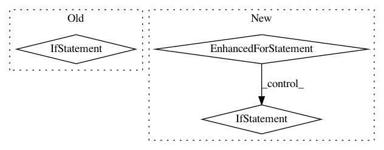

b6dcbf921111667f653d95c2e46fd93b6f23b6c9,examples/real_nvp_2d_rl_example.py,RealNVP2dRlExample,run,#RealNVP2dRlExample#,72
Before Change
}
)
if i % 10 == 0:
self.redraw_samples(sampled_z)
print("{epoch:05d} | {forward_loss:.5f}".format(
epoch=epoch, forward_loss=forward_loss))
self.redraw_contours()
After Change
print("epoch | loss")
with self.session.as_default():
print("true value: ", self._compute_true_value())
for epoch in range(1, NUM_EPOCHS+1):
for i in range(1, NUM_STEPS+1):
_, loss = self.session.run(
(self.policy.train_op, self.policy.loss),
feed_dict={ self.policy.batch_size: self._batch_size, }
)
if i % 20 == 0:
sampled_x, sampled_y = self.session.run(
(self.policy.x, self.policy.y),
feed_dict={ self.policy.batch_size: self._batch_size }
)
x_grid = generate_grid_data(-2.0, 2.0, -2.0, 2.0, 20, 20)
y_grid = self.session.run(
self.policy.y,
feed_dict={ self.policy.x: x_grid }
)
self.redraw_samples(sampled_y, sampled_x, y_grid)
print("{epoch:05d} | {loss:.5f}".format(
epoch=epoch, loss=loss))
self.redraw_contours()
def redraw_samples(self, sampled_y, sampled_x, y_grid):
if not getattr(self, "samples_lines", None):
self.samples_lines = self.ax.plot(sampled_y[:, 0], sampled_y[:, 1], "bx")[0]
self.samples_x_lines = self.ax.plot(sampled_x[:, 0], sampled_x[:, 1], "rx")[0]
In pattern: SUPERPATTERN
Frequency: 3
Non-data size: 3
Instances
Project Name: rail-berkeley/softlearning
Commit Name: b6dcbf921111667f653d95c2e46fd93b6f23b6c9
Time: 2018-05-22
Author: kristian.hartikainen@gmail.com
File Name: examples/real_nvp_2d_rl_example.py
Class Name: RealNVP2dRlExample
Method Name: run
Project Name: CyberZHG/keras-bert
Commit Name: d55d201b303b4186670ada7c7ea462e0c481d6d6
Time: 2019-07-05
Author: 853842+CyberZHG@users.noreply.github.com
File Name: keras_bert/bert.py
Class Name:
Method Name: get_model
Project Name: CyberZHG/keras-bert
Commit Name: ea89d91f71907901c11f52124dbd193e31d3947f
Time: 2019-05-18
Author: CyberZHG@gmail.com
File Name: keras_bert/optimizers/warmup.py
Class Name: AdamWarmup
Method Name: get_updates